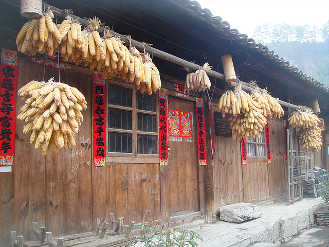
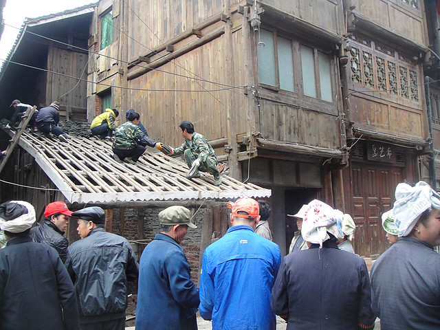
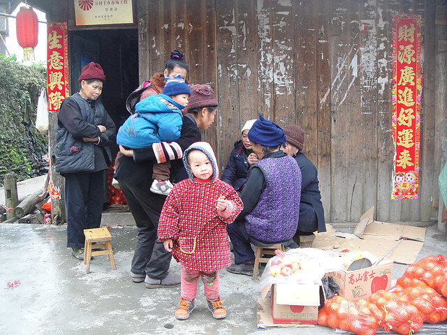
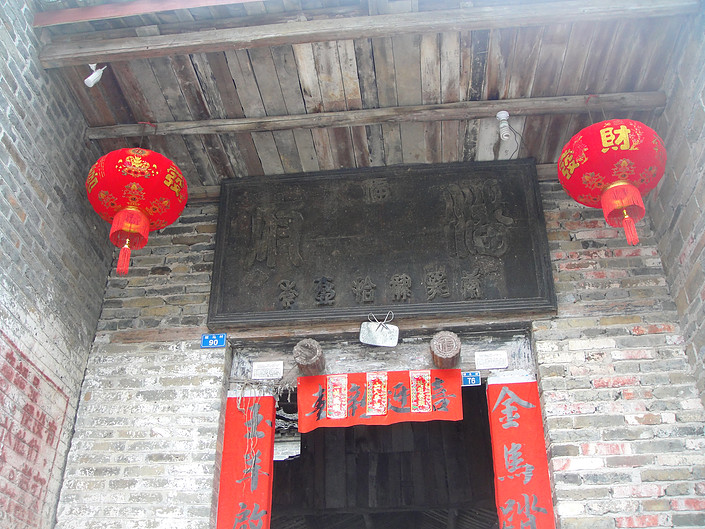
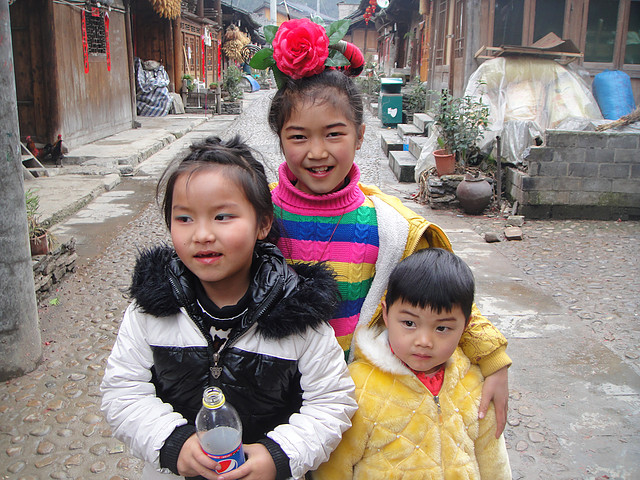

     l’amitié franco-chinoise les échanges culturels entre ressortissants français et chinois favoriser l’accès à l’enseignement des langues des deux pays favoriser l’information sur les connaissances, historiques, philosophiques et géographiques